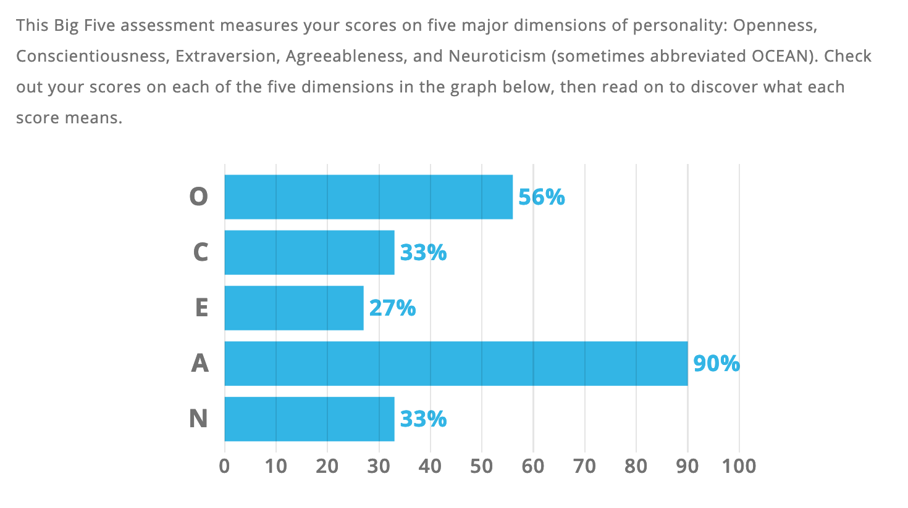

Myer Briggs
Vark

Big Personality Test

What do the results of these tests mean for you?
On seeing my results, it is good to note that none of them are overly surprising. They confirmed what I know of myself and how others describe me. I am, by nature, an introvert and enjoy doing my own things and allows me to be creative in problem solving. I value individualism and often like finding my own path and solutions to problems and situations. However, I am also a people pleaser. I avoid confrontation and always do my best to not upset the way of things or upset people. In this regard, I tend to be flexible in coming up with alternatives and negotiating for compromise. I have learnt to be assertive in my career due to necessity and am now more comfortable with it. As a learner, I have always best learnt by doing. This is often noted as a strength for me and to me, practicality in studying always wins over theory. I learn best when I figure things out on my own; running my own investigations. At work, I am often commended for doing my own research and running different trials in order to resolve a technical problem.
How do you think these results may influence your behavior in a team?
The ‘practical caretaker’ in me allows me to directly look after those in my team. Colleagues depend on me for everyday practical advice and count on me for being hands on when there is a problem to be addressed. I contribute to the team in very concrete and achievable, realistic ways. I am often able to apply examples and practical ideas to solve problems. My agreeable nature tends to be reflected in these situations because team members would listen to my practical suggestions and are on board with me to implement solutions. I am often idealistic in wanting to create simpler and more efficient ways of doing things. However, I tend to do my own research into solutions and find my own path and can be well down the track before realizing I need to go back a few steps and have input from all members before taking the next turn in a project. In this way, I need to be more mindful of my introverted nature and work on more communication to clarify my thinking processes to others.
How should you take this into account when forming a team?
They say a good team should comprise of a variety of different strengths and characters that complement each other. I function best when I have the opportunity to explore my own paths and ideas. As part of a team, I would choose people more extraverted to work with as not only will it complement my introvert nature, it is likely to aid in my communication of thoughts and ideas. Working with someone who is extremely organized and strong with logistics would also complement. As I can be idealistic, having a grounded voice to bounce ideas with will enable more progressive work as a team.